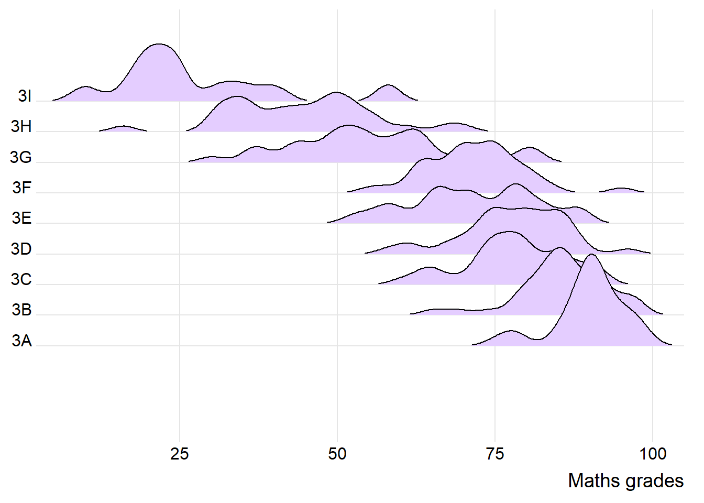
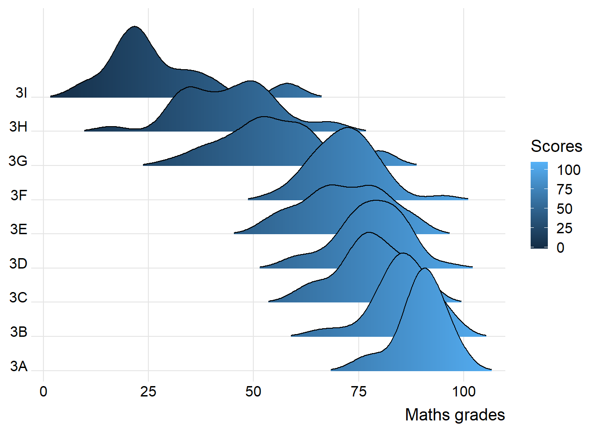
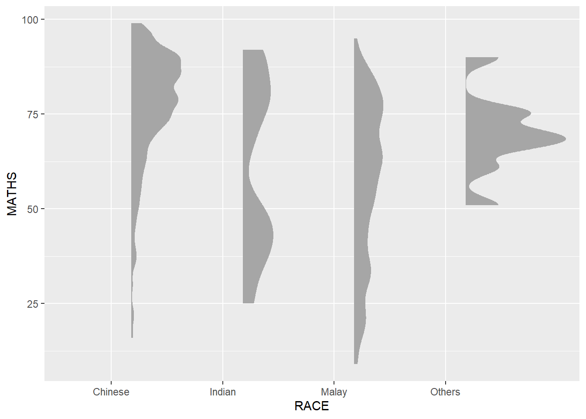

pacman::p_load(tidyverse,ggdist,ggthemes,
colorspace,ggridges)In-class_Ex02 - Visualising Distribution
1.0 Learning Outcome
This In-class Exercise is a walk-through of Chapter 9 - Visualising Distribution in R4VA. The learning outcome of this chapter is learning the following two distribution by using ggplot and its extension:
Ridgeline plot
Raincloud plot
1.2 Getting Started
1.2.1 Installing and loading the packages
For the purpose of this exercise, the following R packages will be used, they are:
ggridges: a ggplot2 extension specially designed for plotting ridgeline plots
ggdist: a ggplot2 extension specially design for visualising distribution and uncertainty
tidyverse: a family of R packages to meet the modern data science and visual communication needs
ggthemes: a ggplot extension that provides the user additional themes, scales, and geoms for the ggplots package
colorspace: an R package provides a broad toolbox for selecting individual colors or color palettes, manipulating these colors, and employing them in various kinds of visualisations.
The code chunk below will be used load these R packages into RStudio environment.
1.2.2 Data Import
For the purpose of this exercise, Exam_data.csv will be used.
In the code chunk below, read_csv() of readr package is used to import Exam_data.csv into R and saved it into a tibble data.frame.
exam <- read_csv("data/Exam_data.csv")1.3 Visualising Distribution with Ridgeline Plot
Ridgeline plot (sometimes called Joyplot) is a data visualisation technique for revealing the distribution of a numeric value for several groups. Distribution can be represented using histograms or density plots, all aligned to the same horizontal scale and presented with a slight overlap.
Figure below is a ridgelines plot showing the distribution of English score by class.
Note
Ridgeline plots make sense when the number of group to represent is medium to high, and thus a classic window separation would take to much space. Indeed, the fact that groups overlap each other allows to use space more efficiently. If you have less than 5 groups, dealing with other distribution plots is probably better.
It works well when there is a clear pattern in the result, like if there is an obvious ranking in groups. Otherwise group will tend to overlap each other, leading to a messy plot not providing any insight.
1.3.1 Plotting ridgeline graph: ggridges method
There are several ways to plot ridgeline plot with R. In this section, you will learn how to plot ridgeline plot by using ggridges package.
ggridges package provides two main geom to plot gridgeline plots, they are: geom_ridgeline() and geom_density_ridges(). The former takes height values directly to draw the ridgelines, and the latter first estimates data densities and then draws those using ridgelines.
The ridgeline plot below is plotted by using geom_density_ridges().

ggplot(exam,
aes(x = ENGLISH,
y = CLASS)) +
geom_density_ridges(
scale = 3,
rel_min_height = 0.01,
bandwidth = 2,
fill = lighten("#CC99FF", 0.5),
color = "black"
) +
scale_x_continuous(
name = "English grades",
expand = c(0,0)
) +
scale_y_discrete(name = NULL, expand = expansion(add = c(3,3))) +
theme_ridges()1.3.2 Varying fill colors along the x axis
Sometimes we would like to have the area under a ridgeline not filled with a single solid color but rather with colors that vary in some form along the x axis. This effect can be achieved by using either geom_ridgeline_gradient() or geom_density_ridges_gradient(). Both geoms work just like geom_ridgeline() and geom_density_ridges(), except that they allow for varying fill colors. However, they do not allow for alpha transparency in the fill. For technical reasons, we can have changing fill colors or transparency but not both.

ggplot(exam,
aes(x = ENGLISH,
y = CLASS,
fill = stat(x))) +
geom_density_ridges_gradient(
scale = 3,
rel_min_height = 0.01) +
scale_fill_continuous(name = "Scores") +
scale_x_continuous(
name = "English grades",
expand = c(0,0)
) +
scale_y_discrete(name = NULL, expand = expansion(add = c(0.2, 2.6))) +
theme_ridges()1.3.3 Mapping the probabilities directly onto colour
Beside providing additional geom objects to support the need to plot ridgeline plot, ggridges package also provides a stat function called stat_density_ridges() that replaces stat_density() of ggplot2.
Figure below is plotted by mapping the probabilities calculated by using stat(ecdf) which represent the empirical cumulative density function for the distribution of English score.
ggplot(exam,
aes(x = MATHS,
y = CLASS,
fill = 0.5 - abs(0.5-stat(ecdf)))) +
stat_density_ridges(geom = "density_ridges_gradient",
calc_ecdf = TRUE) +
scale_fill_viridis_c(name = "Tail probability",
direction = -1) +
theme_ridges()ggplot(exam,
aes(x = MATHS,
y = CLASS,
fill = 0.5 - abs(0.5-stat(ecdf)))) +
stat_density_ridges(geom = "density_ridges_gradient",
calc_ecdf = TRUE) +
scale_fill_viridis_c(name = "Tail probability",
direction = -1) +
theme_ridges()ggplot(exam,
aes(x = ENGLISH)) +
geom_histogram()ggplot(exam,
aes(x = ENGLISH)) +
geom_density(
color = "#1696d2",
adjust = .65,
alpha = .6
)The alternative design
median_eng <- median(exam$ENGLISH)
mean_eng <- mean(exam$ENGLISH)
std_eng <- sd(exam$ENGLISH)
ggplot(exam,
aes(x= ENGLISH)) +
geom_density(
color = "#1696d2",
adjust = .65,
alpha = .6) +
stat_function(
fun = dnorm,
args = list(mean = mean_eng,
sd = std_eng),
col = "grey30",
linewidth = .8) +
geom_vline(
aes(xintercept = mean_eng),
color = "#4d5887",
linewidth = .6,
linetype = "dashed") +
annotate(geom = "text",
x = mean_eng - 8,
y = 0.04,
label = paste0("Mean ENGLISH: ",
round((mean_eng), 2)),
color = "#4d5887") +
geom_vline(
aes(xintercept = median_eng)
)